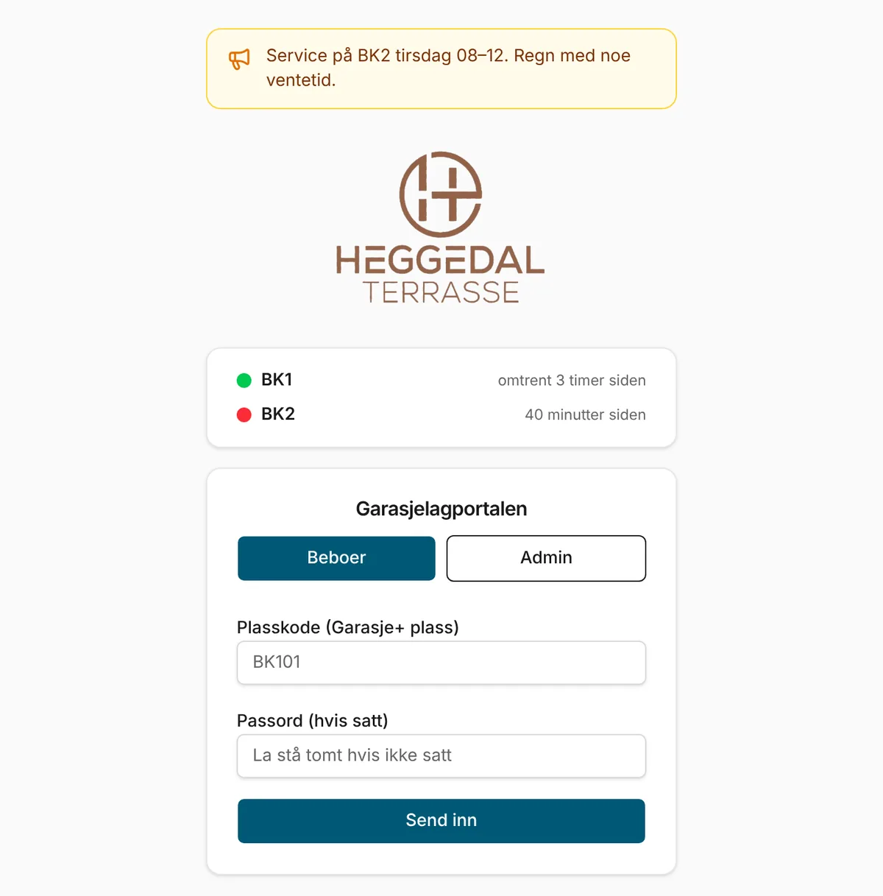
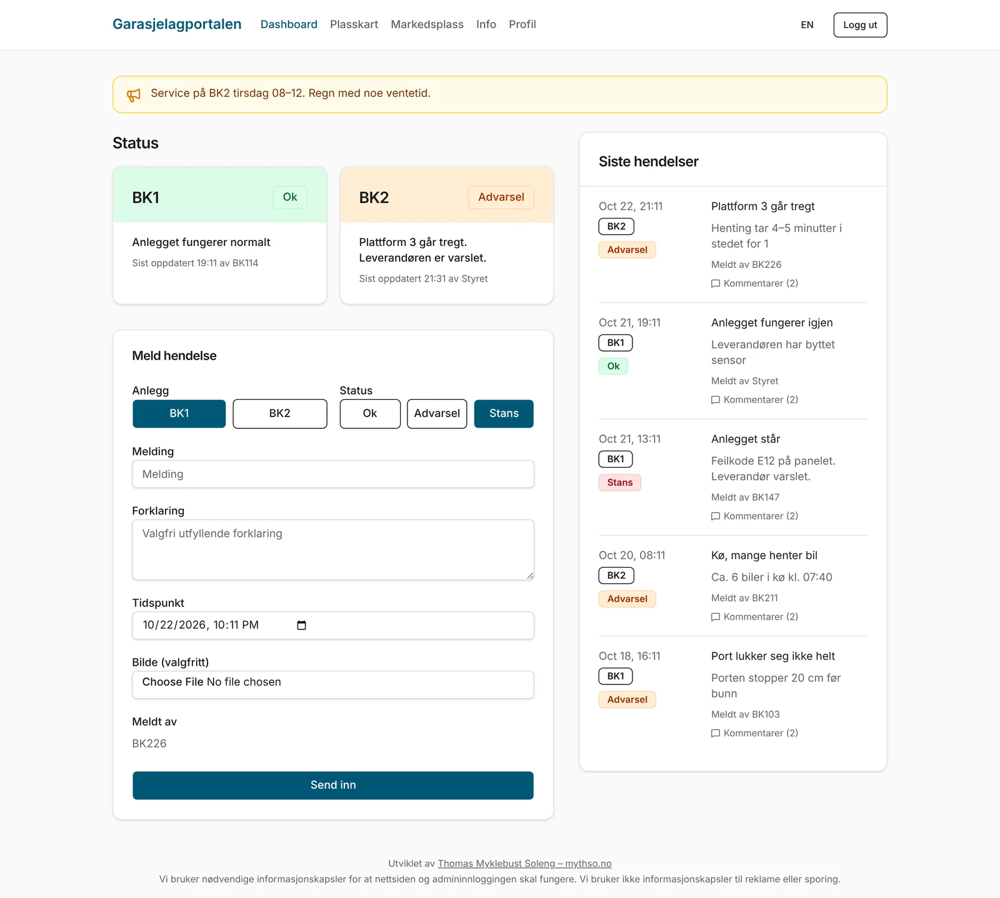
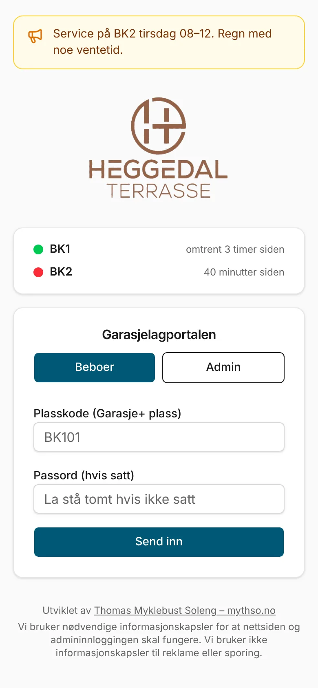
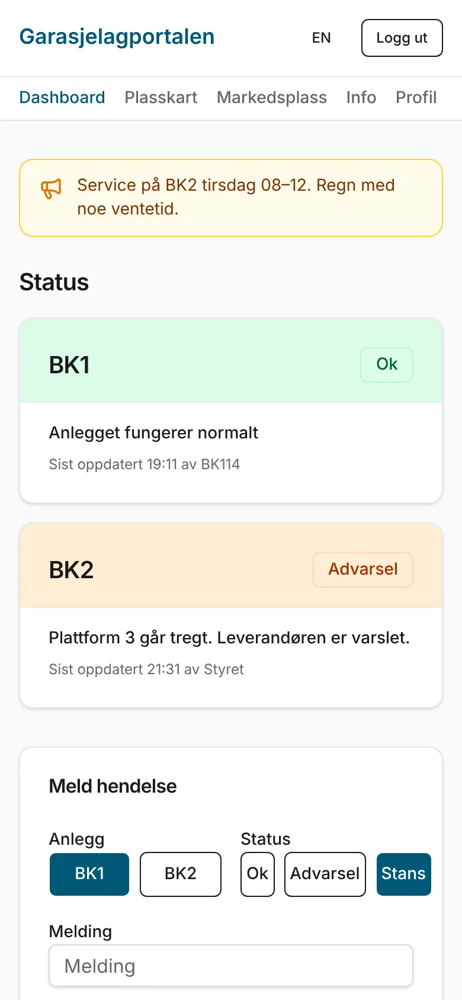
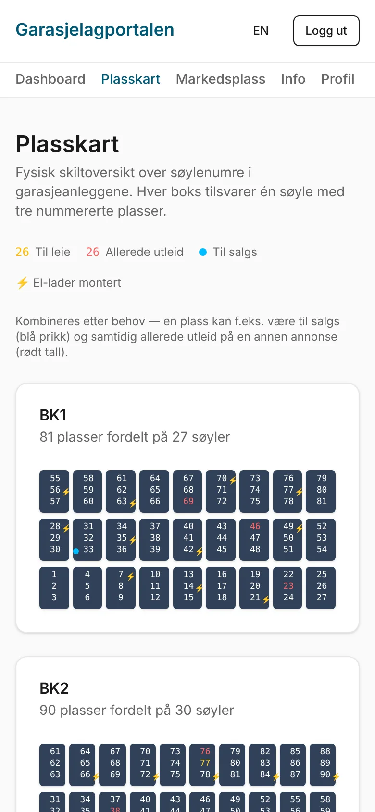
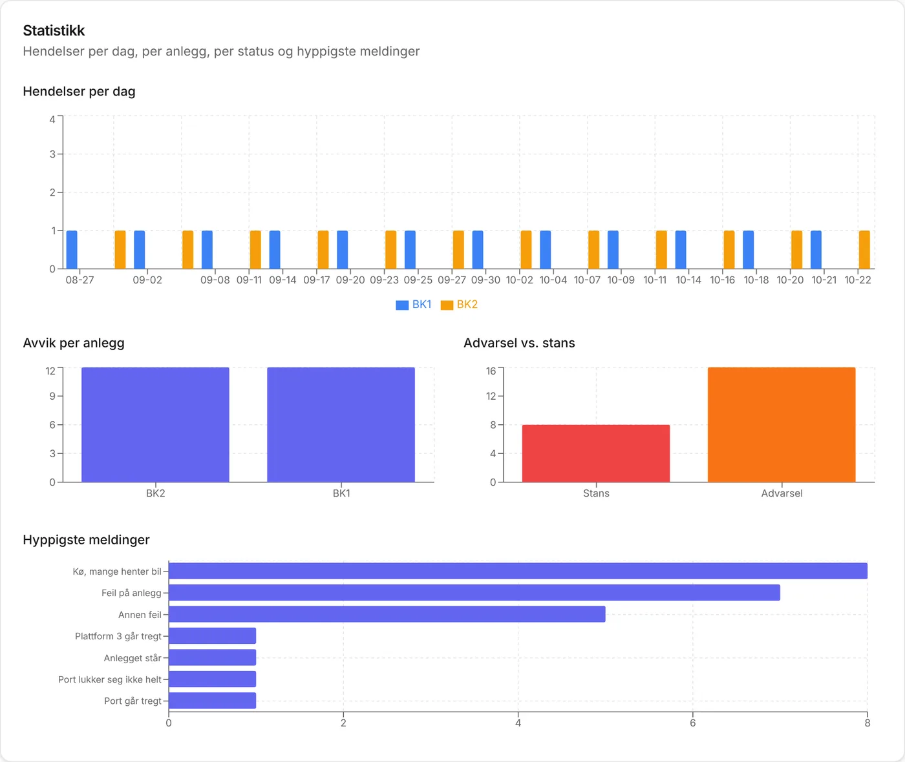
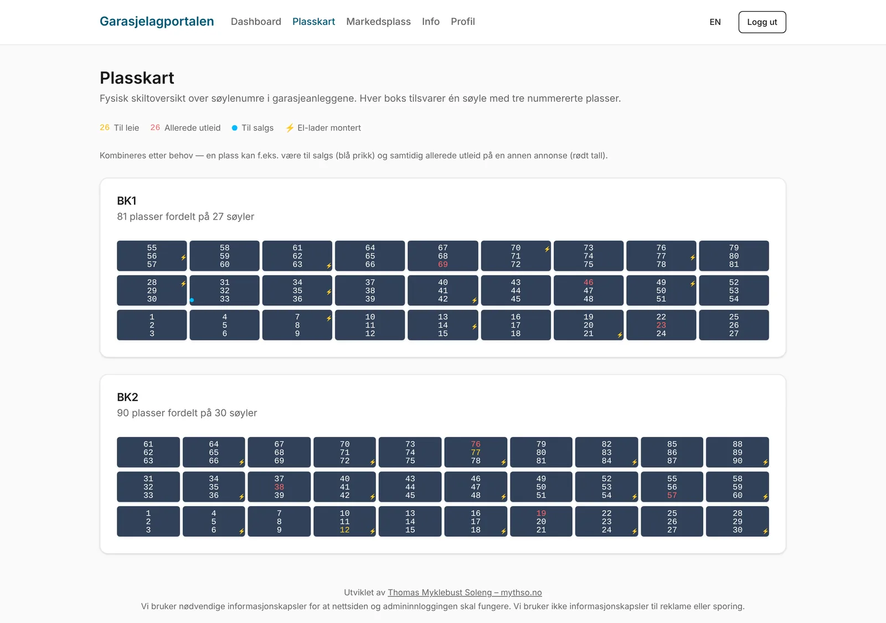
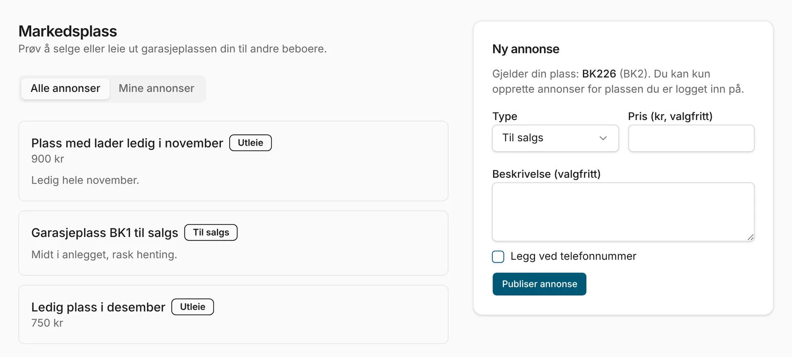
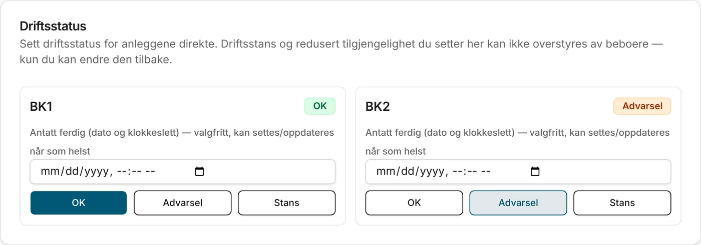

En driftsportal for to automatiske garasjeanlegg i et boligsameie. Beboerne skulle vite om garasjen virket før de gikk ned for å hente bilen, og styret skulle få dokumentasjon på hver driftsstans.
2026
Rolle: eneste utvikler
Heggedal Terrasse Boligsameie
Utvikling stoppet oktober 2026

Forsiden. Status for begge anlegg vises før innlogging, så alle kan sjekke garasjen raskt.
Bakgrunnen
Sameiet har to semiautomatiske garasjeanlegg med til sammen 171 plasser: BK1 med 81 og BK2 med 90. Bilene står på plattformer som anlegget flytter selv. Det er plassbesparende, men når et anlegg stopper, sitter bilen fast til en tekniker har vært der.
Anleggene stoppet ofte. En uavhengig teknisk inspeksjon høsten 2025 gikk gjennom alarmloggene og fant at oppetiden lå vesentlig under 99,9 prosent, som rapporten brukte som rimelig referansenivå for stabil drift. Rapporten pekte også på lav kapasitet, mangelfull dokumentasjon og flere avvik fra standarden anlegget er bygget etter.
Dermed handlet det om mer enn å vite om garasjen virket. Garasjeeierne hadde en pågående reklamasjonssak, og hver stans måtte dokumenteres med dato, anlegg, nedetid fra og til, og årsak. Den dokumentasjonen fantes ikke samlet noe sted. Informasjonen spredte seg via naboprat og meldinger, og de fleste fikk vite om en stans først når de sto ved porten.
På årsmøtet i april 2026 ble det fremmet forslag om at styringsgruppa for garasjeeierne skulle skaffe et eget kommunikasjonsverktøy for eierne av parkeringsplassene. Årsmøtet vedtok å undersøke det videre. Portalen var mitt svar på det.
Løsningen
Portalen samlet tre ting på ett sted: status i sanntid, en felles logg over hendelser, og et verktøy for styret.

Dashboardet. Status for begge anlegg øverst, et skjema der beboere melder fra, og de siste hendelsene med kommentarer til høyre.
Status i sanntid. Hvert anlegg er enten OK, Advarsel eller Stans, med en kort melding og hvem som oppdaterte sist.
Meld fra på sekunder. Beboere logger inn med sin egen plasskode og melder kø, feil eller andre observasjoner, med valgfritt bilde. Andre kan kommentere.
Varsling uten støy. E-post går til styret bare når et anlegg går over til Stans, ikke for hver oppdatering mens det står.
Automatisk stopplogg. Hver stans åpnes og lukkes automatisk med tidspunkt og varighet. Styret kan fylle inn årsak i etterkant og eksportere alt som CSV.



På mobil, der de fleste faktisk brukte portalen: forsiden, dashboardet og plasskartet.

Hendelsesloggen med statistikk: hendelser per dag, avvik per anlegg, advarsel mot stans og de hyppigste meldingene.
Etter hvert kom flere funksjoner til: et plasskart over alle søylene i begge anlegg, en markedsplass for utleie og salg av plasser mellom beboere, en infoside med ordensregler, driftsmeldinger som banner, og et adminpanel der styret kan låse status slik at beboere ikke overstyrer den.

Plasskartet speiler skiltingen i garasjen. Plasser med el-lader, plasser til leie og plasser til salgs er markert.

Markedsplassen. Beboere kan leie ut eller selge plassen sin til naboer, og annonsene vises også i plasskartet.

Styret setter driftsstatus og antatt ferdig-tidspunkt direkte. En status satt herfra kan bare styret endre tilbake.
Teknisk
FrontendReact 18, Vite, Tailwind
BackendExpress 5, TypeScript
DatabasePostgres via Drizzle ORM
DriftRailway + Supabase
Prosjektet er en pnpm-monorepo med en felles OpenAPI-spesifikasjon som genererer Zod-validering for backend og React Query-hooks for frontend. Det startet på Replit og ble flyttet til Railway og Supabase underveis, med eget domene.
Backup: gratisnivået hos både Supabase og Railway mangler automatisk backup. Løsningen ble en full eksport og import av hele databasen fra adminpanelet, verifisert med en komplett rundtur uten datatap.
Språk: norsk som standard, med engelsk som valg.
Det meste ble bygget sammen med Claude via MCP-koblinger mot GitHub, Supabase og Railway, og hver endring ble testet direkte i produksjon med testdata som ble ryddet bort etterpå.
Sikkerhet og personvern
Portalen håndterte innlogging og kontaktinfo for naboer, så sikkerhet og personvern var med fra starten:
Passord: hashes med scrypt og eget salt per bruker. Sammenligning skjer i konstant tid, så svartiden ikke røper noe.
Admin-koder og innlogginger: lagres bare som SHA-256-hash, aldri i klartekst. Styret kan generere nye koder selv.
Vern mot gjetting: maks ti innloggingsforsøk per IP-adresse per kvarter.
Tilgangsstyring: beboere og admin har adskilte rettigheter. Styret kan sperre en konto, som da logges ut med en gang, og nullstille passord. Status satt av styret kan ikke overstyres av beboere.
Dataminimering: beboere identifiseres med plasskode, ikke navn. Telefon, bilnummer og adresse er frivillig og brukes bare når beboeren selv velger det, for eksempel i en annonse.
Informasjonskapsler: portalen brukte bare det som var nødvendig for innlogging, ingen sporing eller reklame, og opplyste om dette på hver side.
Logger og backup: innloggingsdata fjernes fra serverloggene. Sikkerhetskopien tar med alle data, men utelater innloggingsnøkler, og gjenoppretting krever eksplisitt bekreftelse.
Filopplasting: størrelsesgrense på bilder og vedlegg, og bare PDF er tillatt for dokumenter.
Eksport: CSV-eksport av hendelser og stopplogg, så dokumentasjonen kan brukes videre i reklamasjonssaken uavhengig av portalen.
Én avveining var bevisst: Som standard kunne beboere logge inn med plasskoden alene, siden tilliten i sameiet er høy og terskelen skulle være lav. Hver beboer kunne sette et eget passord, og styret kunne kreve det om trusselbildet endret seg.
Utfallet
Med årsmøtets vedtak som utgangspunkt sendte jeg en demo og et pristilbud på 449 kr i måneden i august. Tilbakemeldingen var god: verktøyet ble beskrevet som gjennomtenkt, og prisen som overkommelig.
Problemet var budsjettet. Styret ville vente med nye kostnader til garasjeregnskapet var på plass. Jeg tilbød en kostnadsfri pilotperiode, men saken ble liggende. I oktober valgte styret i stedet å lage en egen, enklere app med ferdige knapper for kø og feil, push-varsler og en lenke for frivillig Vipps-bidrag.
Jeg vurderte å selge portalen videre til andre sameier og borettslag, men markedet er lite, og styrer har gratisalternativer gjennom forvalteren. Derfor stoppet jeg utviklingen og lar prosjektet stå her som et case.
Hva jeg lærte
Kjøperen er ikke brukeren. Beboerne bruker portalen, men styret betaler, og styret må forholde seg til regnskap, vedtak og fellesutgifter.
Push-varsel slår funksjonsliste. Det viktigste for beboerne var ett varsel på telefonen. Plasskart og markedsplass var hyggelig, men ikke det som avgjorde.
Betalingsvilje er ikke det samme som budsjett. Styringsgruppa ville ha verktøyet og syntes prisen var rimelig, men pengene var ikke satt av. I et sameie må en ny utgift inn i budsjettet, og det skjer gjerne først ved neste årsmøte.
Avtal vilkår før du gir full tilgang. Når kunden har sett hele løsningen, kan de like gjerne lage en enklere variant selv. En begrenset demo og en avtale om pilot burde kommet før full tilgang.
Den egentlige verdien var dokumentasjon. Stopploggen med tidspunkt og varighet er det en enkel knappe-app ikke gir. Hadde jeg startet på nytt, hadde jeg ledet med det.
Skjermbildene er tatt fra en lokal kopi med fiktive testdata. Ingen ekte beboere, hendelser eller personopplysninger vises.